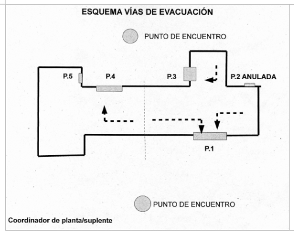
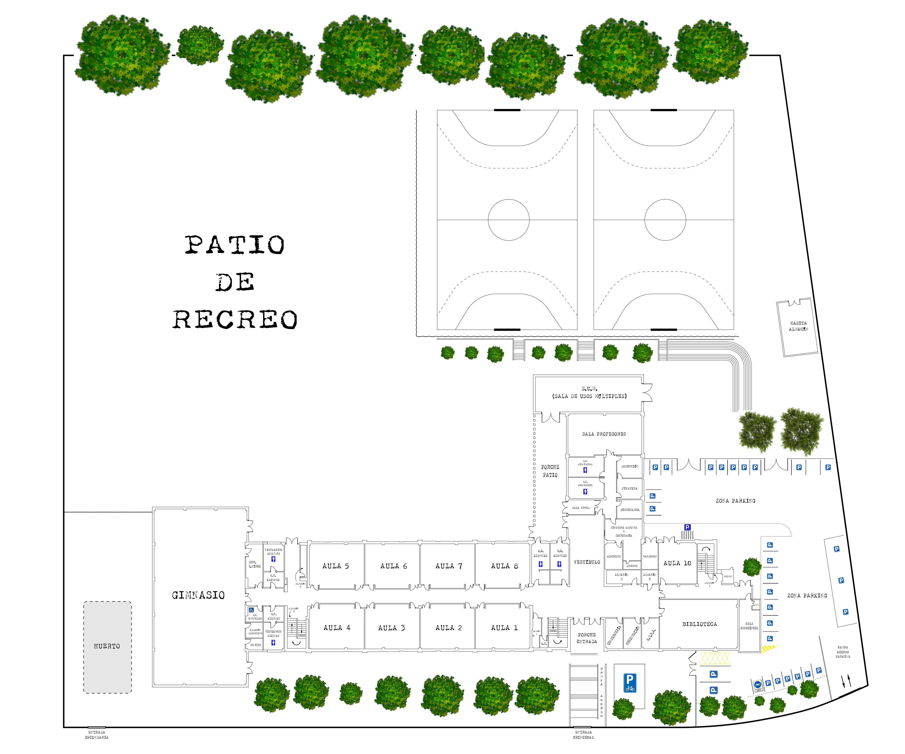
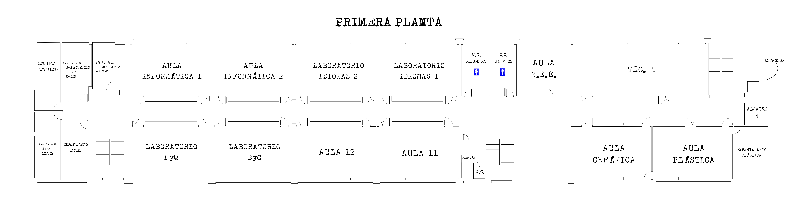
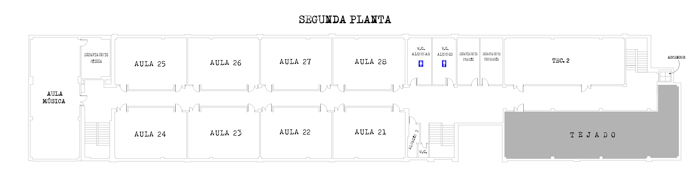

ASPECTOS ORGANIZATIVOS DEL SIMULACRO DE EVACUACIÓN

- Coordinador general: Director
- Coordinador suplente 1º: Profesor Coordinador del Plan y Jefe de Estudios
- Coordinador suplente 2º: Profesor Coordinador del Plan y Secretaria
Se nombrará también a un coordinador de cada planta que las Aulas 7, 16 y 27. Serán suplentes respectivamente
profesor o profesora de las Aulas 2, 12 y 22. En dichas aulas se colocará un distintivo indicador de su condición de aula del coordinador titular (I) o suplente
de planta. Se responsabilizará de:
- Hacer cumplir el orden de evacuación indicado más adelante.
- Revisar aulas y aseos cuando haya desalojado su planta..
PROCEDIMIENTO DE EVACUACIÓN
La evacuación ordenada por plantas:
A la señal de comienzo del simulacro, desalojarán el edificio en primer lugar los ocupantes de la planta baja
- Puerta 1
- Aulas 1,2,8 y 7
- Aulas 9 y 10
- Conserjeria Dprto de Orientación, AMPA y Biblioteca
- Aulas 11, 12, Laboratorio de Idiomas I y II bajarán por la escalera central
- Aulas de N.E.E, Tecnología I y Cerámica y Plástica bajan por las escaleras correspondiente a la Puerta 2 y evacuuaan por P.1.
- Las aulas 21, 22, 28 y 27 bajarán por la escalera central, en el orden indicado
- Puerta 2
- Ha sido anulada debido a que da al paracamiento y este se encuentra vallado por noormativa
- Puerta 3
- Sala de Profesores y Despachos
- Puerta 4
- Aulas 3,4,5 y 6
- Aula de Informática, 16, Laboratorio de Ciencias Naturales I y II
- Departamento de Inglés, Lengua Matemáticas, Sociales y Naturales
- Aula de Tecnología 2, Departamentos de Francés y Tecnología bajaran por la escalera correspondiente a la puerta 2 y desalojan por P1
- Puerta 5
Ocupantes del gimnasio y de sus servicios asociados
En todos los casos el profesor o profesora conducirá a su grupo de alumnos en la dirección de salida, siendo los coordinadores de planta los responsables de que ésta queda vacía
- El alumnado y el personal del centro que ha desalojado se concentrtarán en el exterior, siempre y bajo el control del profesor responsable, en los siguientes puntos
- Los que han desalojado por las puertas 3, 4 y 5 se concentrarán en las pistas deportivas
- Los que han desalojado por la puerta 1 se concentrarán frente a las puertas junto a la valla perimétrica del centro
-
Finalizado el ejercicio de evaucación, el equipo coordinador inspeccionará todo el centro, con objeto de detectar las poisbles anomalías de desperfetos que hayan podido ocarsionarse.
Coordinador de Plantas
Alumnado con dificultades motrices
En última instancia, el profesor que se encuentre en el grupo es el que se hace cargo de su evacuación (ya sea delegando en compañeros, ya sea él mismo).
Plantas
Planta Baja
PLANTA BAJA: A.7/A.2

Primera planta
PLANTA 1ª: A.16/A.12

Segunda planta
PLANTA 2ª: A.27/A.22
